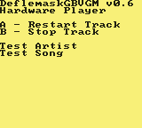
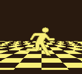

| DGB Sound engine |
Game Boy sound engine, player and converter written in assembly and C. Higher speed efficiency and better Game Boy optimization compared to regluar .vgm engines. Official Deflemask ROM exporter. |
 |
| GB2Twitter |
Twitter client written in assembly, python and C for the Nintendo Game Boy. Winner of the Student Innovation Centre 2019 Idea fund. |
 |
| MarineAhoyGB |
Game Boy ROM written in assembly to play a visualized cover of Ahoy!! 我ら宝鐘海賊団 by Houshou Marine. Example demo for my custom sound engine. |
 |
| Horror Demo |
WIP Game Boy demoscene demo with 3d effects. |
 |